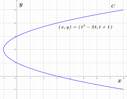
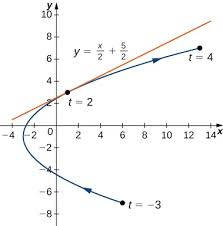
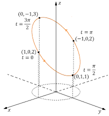
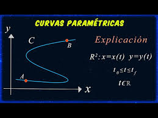
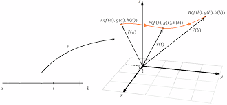
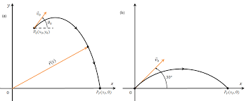
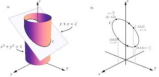
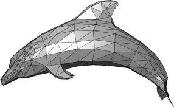

1. Curvas Paramétricas

Las curvas paramétricas son una forma de representar curvas en el plano (o en el espacio) usando un parámetro, normalmente llamado t.
En lugar de escribir y en función de x, se escriben ambas variables en función de t:
x=f(t),y=g(t)
Cálculo de la derivada de una curva paramétrica

Calcule la derivada
𝑑𝑦
𝑑𝑥
para cada una de las siguientes curvas planas definidas paramétricamente y ubique cualquier punto crítico en sus respectivos gráficos.
𝑥(𝑡)=𝑡2−3,𝑦(𝑡)=2𝑡−1,−3≤𝑡≤4
𝑥(𝑡)=2𝑡+1,𝑦(𝑡)=𝑡3−3𝑡+4,–2≤𝑡≤5
𝑥(𝑡)=5cos𝑡,𝑦(𝑡)=5sen𝑡,0≤𝑡≤2𝜋
Funciones vectoriales de un parametro

Una funcion con valores vectoriales, o simplemente funcion vectorial, es una funcion cuyo rango o imagen es un conjunto de vectores.
Interpretación geométrica

A medida que t aumenta:
Se recorre la curva,
Se puede saber dirección,
Se puede saber velocidad
. Esto es algo que una función normal y=f(x) no muestra.
Vector posición

Una curva paramétrica también se escribe como vector:
r
(t)=(x(t),y(t))
Ejemplo:
r (t)=(t,t 2)
Esto describe la trayectoria de una partícula.

Desde el punto de vista del movimiento, una curva paramétrica permite calcular magnitudes físicas importantes. A partir del vector posición
r
(t), se obtiene la velocidad derivando respecto a t y la aceleración con la segunda derivada.
Además, la pendiente de la curva se calcula con la relación entre derivadas, lo que permite conocer la inclinación en cada punto:
dx dy = dt dx dt dy
Esto hace que las curvas paramétricas sean muy útiles para analizar trayectorias en física y geometría.

Existen distintos tipos de curvas paramétricas como rectas, circunferencias, elipses, espirales e incluso curvas más complejas,
y también pueden extenderse a tres dimensiones agregando una función z(t), como en el caso de una hélice. Su principal ventaja es que permiten
representar movimientos y formas que no pueden describirse fácilmente con funciones tradicionales,
por lo que se aplican en áreas como videojuegos, animación, ingeniería y simulaciones de movimiento.
2. Mallas poligonales

Una malla poligonal (del inglés: polymesh o mesh) es una superficie creada mediante un método tridimensional
generado por sistemas de vértices posicionados en un espacio virtual con datos de coordenadas propios.
Características
Existen diversos sistemas y algoritmos de creación. Una malla se construye a partir de un mínimo de 3 vértices llamada cara que es la unidad básica de todo polígono tridimensional.
Las reglas del modelado tridimensional usan de 4 vértices (quads, poly) a más de 4 (poly) vértices para un efectivo control de superficies, ocultando la arista media de un polígono de 4 vértices aunque en realidad este se componga de dos caras de tres vértices cada una.
Este sistema se ha hecho popular debido al uso de la subdivisión que genera superficies fluidas y orgánicas imitando las NURBS que son otro sistema de generación de superficies no poligonales.
Niveles de complejidad
Polígonos bajos
Son modelos que su composición de polígonos es baja lo cual es probable que el modelo tenga un muy mal detalle y no se obtenga un resultado favorable.
Estos modelos se usan para optimizar el rendimiento del videojuego y el "Low-Poly" es efectivo en modelos que no requieren mucho detalle.
Polígonos medios
Son modelos que su composición de polígonos es media y logran dar mejor detalle que los "Low-Poly" aunque su velocidad de procesamiento es más tardada.
Estos modelos son más usados para modelos que requieren un poco más de detalle.
Polígonos altos
Son modelos que su composición de polígonos es alta y llegan a dar un detalle magnífico pero su procesamiento es más complejo y tiende a ralentizar el ordenador,
dependiendo de la potencia con que el hardware de la computadora o consola cuente.
Estos modelos son usados para modelos que precisan de un buen grado de detalle.
3. Aplicaciones
Cuando se sombrean objetos delgados y largos, utilice el valor 0.0. Esto permite proporciones infinitas. Controle la suavidad de la malla con otros parámetros.
Las mallas vértice-vértice
Representan un objeto como un conjunto de vértices conectados entre sí. Esta es la representación más simple, pero no se usa ampliamente, ya que la información de caras y aristas es implícita. Por lo tanto,
es necesario recorrer los datos para generar una lista de caras para la renderización. Además, las operaciones sobre aristas y caras no son fáciles de realizar.